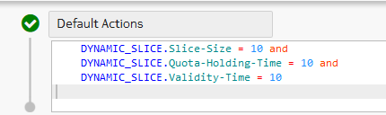
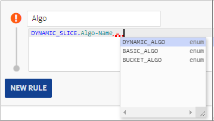
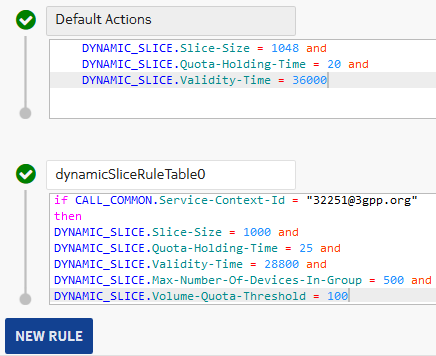
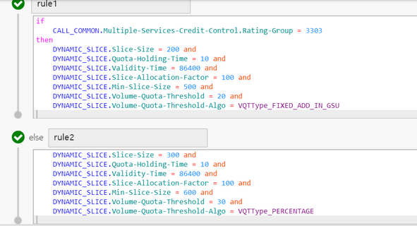

Quota management is the primary object used in the dynamic slicing and it works in centralized mode of rating and charging. When the reservation unit is not provided by PGW, the slice to be reserved is computed either statically or dynamically according to the quota management profile configured.
By default, the name of the quota management is default_profile, provisioned by the user as per the dynamic slicing feature.
For information on slice reduction, see the Slice reduction section.
Configuration
Log into the SM GUI, and navigate to
Charging → ☰ → Catalog Rules → Quota
Management. To define a new quota management, click  to add the basic details as described in the given table.
to add the basic details as described in the given table.
| Parameter | Description | Options | Mandatory/Optional |
|---|---|---|---|
| Profile Name | This parameter indicates a unique name to identify the quota management profile. | String | Mandatory |
| Slice Size (Bytes) |
This parameter indicates the static size of slice in bytes. The value of this parameter is always greater than zero. |
Long | Mandatory |
| Quota Holding Time (s) |
This parameter indicates the value of the quota holding time in seconds and controls the time the session remains in the idle state in the network. The value of this parameter is always greater than zero. |
Long | Optional |
| Validity Time (s) |
This parameter indicates the value of the validity time in seconds, controls the time the quota remains active in the network, and controls the effective allocation of resources. The value of this parameter is always greater than zero. |
Long | Mandatory |
| Ignore Reserved Quota |
This parameter determines whether reservation quota needs to be considered in slice reduction logic or not. It can have one of the following values:
Default value of this parameter is No.  Note: Note: |
Drop-down list | Optional |
| Security Domain | This parameter indicates the security domain associated with the quota management profile. Select the required security domain from the predefined security domains in the drop-down list. | Drop-down list | Optional |
| Slicing Configuration | |||
| Default Actions | Contains the pre-configured and pre-provisioned values: | ||
|  | |||
| Click NEW RULE to define one or more rules. To add details for DYNAMIC_SLICE, press CTRL+spacebar, select DYNAMIC_SLICE to get the parameters as described in Attributes available for DYNAMIC_SLICE result context. | |||
| Rule Name | This parameter indicates the name of the condition based customized rule. | String | Optional |
To set a quota management as default, click icon and select a profile from the Default profile drop-down list.
- It is not possible to set a quota management that is not provisioned to any ME as a default profile on SM.
- When a quota management is provisioned to an ME, its name is checked against the default profile on SM. If both are the same, then the ME`s default quota management is also updated.
- A quota management that is chosen to be the default profile and is provisioned on at least one ME, cannot be deleted or withdrawn unless another profile is selected to be default on that ME.
Note:| Attribute | Description | Type | Mandatory/Optional |
|---|---|---|---|
| Algo-Name |
This parameter indicates the name of the algorithm you want to configure based on configurable conditions, such as BASIC_ALGO, BUCKET_ALGO, and DYNAMIC_ ALGO. It is applicable to customized rule. |
String | Optional |
|  | |||
| Select-Algo | This parameter allows you to select the DYNAMIC_ALGO_2 for calculating the slice size. It uses the parameters of DYNAMIC_ALGO along with two additional optional parameters named Min Slice Size and Max Slice Size. It is applicable to customized rule and parameterized algorithm with Min and Max slice. Format is: DYNAMIC_SLICE.Select-Algo(AlgoName, Min slice size, Max slice size)Example:DYNAMIC_SLICE.Select-Algo(“DYNAMIC_ALGO_2”, 500, 5000) Note:
|
String | Optional |
| Max-Number-Of-Devices-In-Group |
This parameter determines the maximum number of devices with rating group. For any device, the maximum number of lines with respect to rating group is 10. It is applicable to customized rule/default actions. Consider the following points while configuring this parameter:
|
Long | Mandatory |
| Min-Slice-Size |
This parameter indicates the minimum slice size defined for the quota management. The value is defined in bytes and applicable for Granted Service Units (GSU) of volume type. The value must not be negative and not in decimal. It is applicable to customized rule. Note: |
Long | Optional |
| Max-Slice-Size |
This parameter indicates the maximum slice size defined for the quota management. The value is defined in bytes and applicable for GSU of volume type. This value must not be negative and in decimal. Note: |
Long | Optional |
| Quota-Holding-Time | This parameter indicates the value of the quota holding time in seconds and controls the time the session remains in the idle state in the network. It is applicable to customized rule or default actions. When the value of this parameter is 0, QHT is sent to the network. | Long | Optional |
| Slice-Allocation-Factor |
This parameter indicates the value calculated on the delta between the current usage and threshold value. |
Long | Optional |
| Slice-size |
This parameter indicates a static size of slice in bytes. It is applicable to customized rule/default actions. The value of this parameter must always be greater than zero. This parameter must be included in the rules when configured without algorithms Dynamic_Algo or Dynamic_Algo_2. |
Long | Optional |
| Validity-Time |
This parameter indicates the value of the validity time in seconds, controls the time the quota remains active in the network, and controls the effective allocation of resources (dynamic slice allocation). It is applicable to customized rule. The value of this parameter is always greater than zero. If defined as zero, then fallback is to default action or values in quota management. |
Long | Mandatory |
| Volume-Quota-Threshold |
This parameter is applicable to data (volume) call, supported for both centralized and decentralized calls. It can be used when certain quantity (volume only) is reserved and granted in CCA. It is applicable to customized rule. The value of VQT can be configured in percentage and calculated on the granted volume quota sent in CCA, such as 90%. If the VQT value is 0 or after calculation the VQT value is 0, then it is not sent in CCA. The value of VQT can also be configured as fixed value. If the Volume-Quota-Threshold-Algo is configured as FIXED_ADD_IN_GSU, then the Volume-Quota-Threshold parameter in quota management rule specifies the absolute value used to set the AVP in CCA message sent back to the network. Note:If VQT value after calculation is greater than 4,294,967,295, then 4,294,967,295 is set as VQT value. This is according to the specification of Volume-Quota-Threshold AVP which is of type unsigned32 and maximum value allowed is 4,294,967,295. The value of this parameter is in the range of 0 to 100. |
Long | Optional |
|

The VQT parameter can be configured in both default action and rule. |
|||
| Volume-Quota-Threshold-Algo |
This parameter is added in the quota management rule under Dynamic_Slice and can have one of the following values:
By default, the value of this action attribute is set as PERCENTAGE to achieve the existing slice reduction functionality. This parameter is also defined per MSCC or rating group. Depending on the type of algorithm used, the Volume-Quota-Threshold parameter is calculated and sent back to the network in CCA message. |
Long | Optional |
|  | |||
| MIN-TTC |
This parameter indicates the minimum tariff time change value in seconds. If this parameter is not configured, then it is treated as 0. If MIN-TTC is greater than MIN-TTC, then MIN-TTC value is ignored and treated as 0. It is applicable to customized rule. |
Long | Optional |
| MIN-VT |
This parameter indicates the minimum validity time in seconds. If this parameter is not configured, then it is treated as 0. It is applicable to customized rule. |
Long | Optional |
Consumption speed configuration
The condition attribute CALL_COMMON.Consumption-Speed is available to calculate consumption speed for a call. When NCC receives a charging signal, it calculates the consumption speed using the timestamp of the previous charging signal as follows:
Consumption speed = Reported quota usage in last slice/Total duration for last sliceThe following table demonstrates sample rule for configuration based on consumption speed.
| Default actions/ New rule name | Rule | Information |
|---|---|---|
| Default Actions | Add the following action to existing actions: DYNAMIC_SLICE.Validity-Time = 36000 | VT1 = 36000 |
| Rule1 | if CALL_COMMON.Consumption-Speed >= 291 and CALL_COMMON.Consumption-Speed < 1456 then DYNAMIC_SLICE.Validity-Time = 28800 | Speed1 = 1456 VT2 = 28800 |
| Rule2 | if CALL_COMMON.Consumption-Speed >= 1456 and CALL_COMMON.Consumption-Speed < 2912 then DYNAMIC_SLICE.Validity-Time = 21600 | - |
| Rule3 | if CALL_COMMON.Consumption-Speed >= 2912 and CALL_COMMON.Consumption-Speed < 11650 then DYNAMIC_SLICE.Validity-Time = 18000 | Speed2= 11650 VT3 = 18000 |
| Rule4 | if CALL_COMMON.Consumption-Speed >= 11650 and CALL_COMMON.Consumption-Speed < 6553600 then DYNAMIC_SLICE.Validity-Time = 10800 | - |
| Rule5 | if CALL_COMMON.Consumption-Speed >= 6553600 then DYNAMIC_SLICE.Validity-Time = 3600 | - |
| Rule6 | GY_PRE_PROCESSING.Is-TTC-Enabled = True and GY_PRE_PROCESSING.Tariff-Time-Change = 00:00:00 | Use this when the quota management returns a different VT based on the calculated consumption speed. |
Additional information
Following are noteworthy points:
- DYNAMIC_SLICE.Select-Algo has higher priority than DYNAMIC_SLICE.Algo-Name.
- Rules are evaluated one-by-one, first one to be evaluated to true is picked up and algorithm defined in the actions are used for slicing.
- If none of the dynamic quota management rules are matched, then the slicing logic processes the DefaultAction.
- The DefaultAction is picked only when any of the rule defined is not true and if the DefaultAction is also not valid, then static values defined at entity level are picked for processing. Therefore, static values have least priority.
- If DYNAMIC_ALGO_2 is defined without the optional parameters of Min Slice Size and Max Slice Size, then it works same as DYNAMIC_ALGO.
- The Select-Algo configuration is not case-sensitive.
- In case of decentralized charging, if the Algo-Name is DYNAMIC_ALGO or DYNAMIC_ALGO_2 in the quota management object rule, then the DefaultAction is executed as per the configuration.
- In case of centralized charging, it is recommended not to configure the DefaultAction with Algo-Name. If configured, then the Algo-Name is ignored.
- In case of centralized charging, do not configure VT as 0 in the quota management rule. If VT is 0, then it is not considered as NOK scenario and the final value is read from the quota management, bypassing the processing of DefaultAction.
- In case of centralized charging, for non-IMS and non-volume buckets, if a rule is configured in the quota management, then that rule is executed. If the Dynamic Algo is configured in the rule or if a rule is not configured, then default profile action is considered.
| Algo configuration | Algo-Name | Min | Max | Valid/Invalid |
|---|---|---|---|---|
| DYNAMIC_SLICE.Select-Algo ( "DYNAMIC_ALGO_2", 1, 1024) | DYNAMIC_ALGO_2 | 1 | 1024 | Valid |
| DYNAMIC_SLICE.Select-Algo ( "Dynamic_algo_2", , 1024 ) | Dynamic_algo_2 | NA | 1024 | Valid |
| DYNAMIC_SLICE.Select-Algo ( "DYNAMIC_ALGO_2", 1 , ) | DYNAMIC_ALGO_2 | 1 | NA | Valid |
| DYNAMIC_SLICE.Select-Algo ( "Dynamic_Algo_2", 1, 1024 ) | Dynamic_algo_2 | 1 | 1024 | Valid |
| DYNAMIC_SLICE.Select-Algo ( "DYNAMIC_ALGO_2" ) | DYNAMIC_ALGO_2 | NA | NA | Valid |
| DYNAMIC_SLICE.Select-Algo ( "Dynamic_Algo_2" ) | Dynamic_algo_2 | NA | NA | Valid |
| DYNAMIC_SLICE.Select-Algo ( "DYNAMIC_ALGO_2" , 1500 , 24 ) | DYNAMIC_ALGO_2_ | 1500 | 24 | Invalid |
| DYNAMIC_SLICE.Select-Algo ( "DYNAMIC_ALGO_2" , 500 , 500) | DYNAMIC_ALGO_2_ | 500 | 500 | Invalid |
| For the preceding two invalid scenarios, algorithm is not executed but the algorithm rule slice size is returned. If a rule slice size is not configured, then it gets picked from the entity slice size. | ||||
Note:Actions associated with a quota management
|
Action |
Description |
|---|---|
| Create | Creates a quota management entity in the database by providing the mandatory and optional parameters. |
| Read | Displays the quota management entity data fetched from database. |
| Update | Updates a particular quota management entity in database. |
| Delete | Deletes a particular quota management entity from database. This operation is not recommended. |
Note: